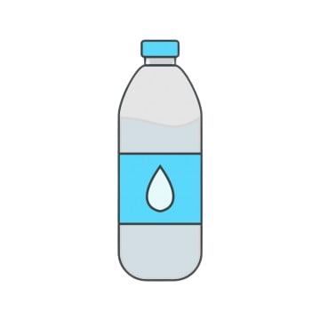

Our team's goal for the hackathon is to create a website that promotes sustainability through its features.
Our team aims to design a platform that inspires people to adopt sustainable practices in their daily lives, especially encouraging college students to make environmentally conscious decisions.
Our website has various features such as tips on eco-friendly living, statistics on plastic bottles used, average electrical bills in the US, and most importantly our electricity bill calculator,
and our water fountain map on DVC Campus.

Water Fountain Map
Our DVC Campus Water Fountain Tracker is designed to help students and staff locate water fountains on the Diablo Valley College campus.
The app provides real-time information on the location of water fountains. The app uses GPS technology to pinpoint the user's location and displays nearby water fountains on a map, alongside directions to the water fountains.
Overall, the DVC Campus Water Fountain Tracker is a convenient and helpful tool for anyone looking to stay hydrated on campus, while staying sustainable without wasting any plastic water bottles.
ELectrical Bill Calculator
Our team's hackathon idea is an electrical bill calculator that will allow users to input their usage of electrical appliances and calculate their estimated monthly electrical bill cost.
The calculator will also provide suggestions on how to reduce energy usage and compare the user's bill to the average American.
It will be user-friendly and easy to navigate, with suggestions based on the user's input, such as turning off appliances when not in use and investing in energy-efficient ones.
The calculator has the potential to promote sustainable energy practices and save users money on their electrical bills.

 copy 2.png)